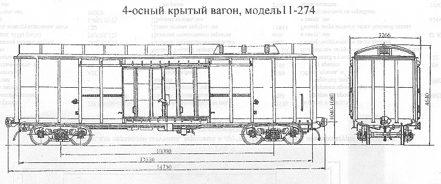

Назначение: для перевозки штучных, зерновых и других грузов широкой номенклатуры требующих защиты от атмосферных осадков
Параметры
| Номер проекта | 274.00.000-02 |
| Технические условия | ТУ24.05.909-89 |
| Модель вагона | 11-274 |
| Тип вагона | |
| Изготовитель | АО "Алтайвагон" |
| Грузоподъемность, т | 50 |
| Масса тары вагона, т | 35 |
| Нагрузка: статическая осевая, кН(тс) |
208,46(21,25) |
| погонная, кН/м(тс/м) | 56,6(5,77) |
| Скорость конструкционная, км/ч | 120 |
| Габарит | 1-ВМ(0-Т) |
| База вагона, мм | 10000 |
| Длина, мм: по осям сцепления автосцепок |
14730 |
| по концевым балкам рамы (длина рамы) | 13510 |
| Ширина максимальная, мм | 3266 |
| Высота от уровня верха головок рельсов, мм: максимальная |
4640 |
| до уровня пола | 1290 |
| Количество осей, шт. | 4 |
| Модель 2-осной тележки | 18-100 |
| Наличие переходной площадки | нет |
| Наличие стояночного тормоза | есть |
| Длина кузова внутри, мм | 13803 |
| Ширина кузова внутри, мм | 2730 |
| Высота кузова по боковой стене, мм | |
| Размер в свету, мм: дверного проема |
3890х2264 |
| загрузочного люка в боковой стене | |
| загрузочного люка в крыше | |
| Объем кузова, м³ | 120 |
| Год постановки на серийное производство | 1989 |
| Возможность установки буфера | нет |